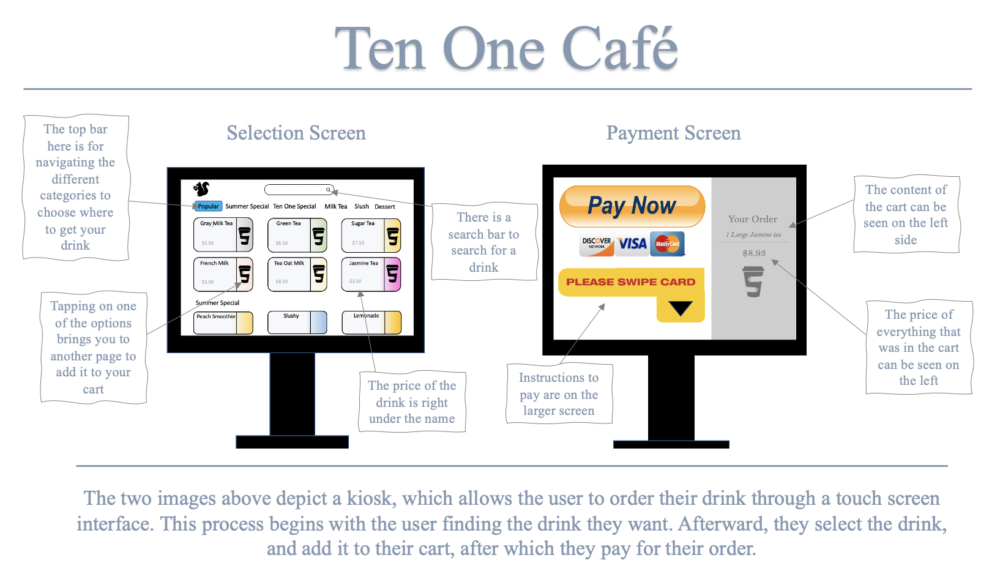
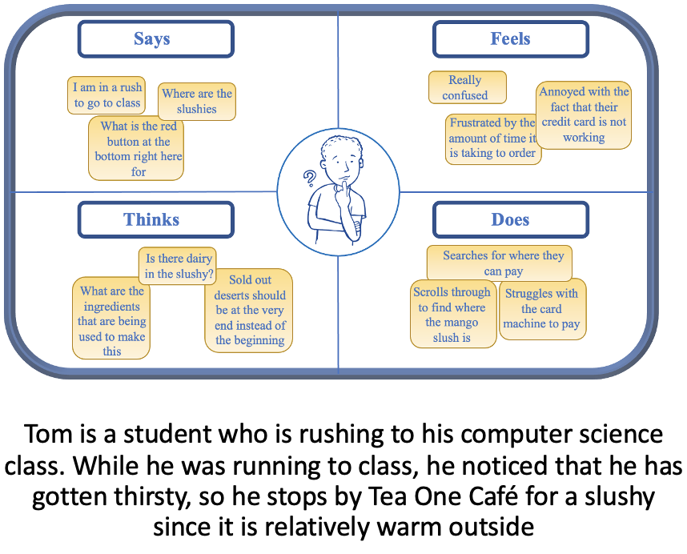
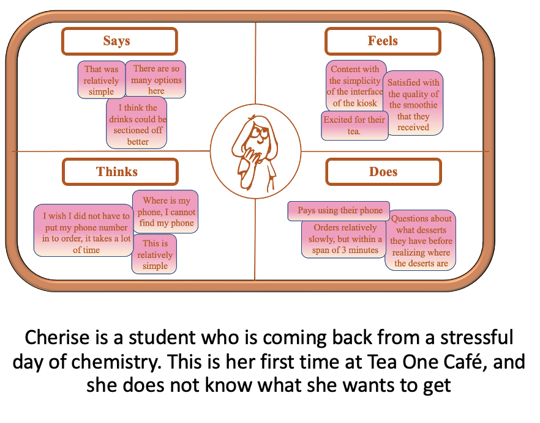
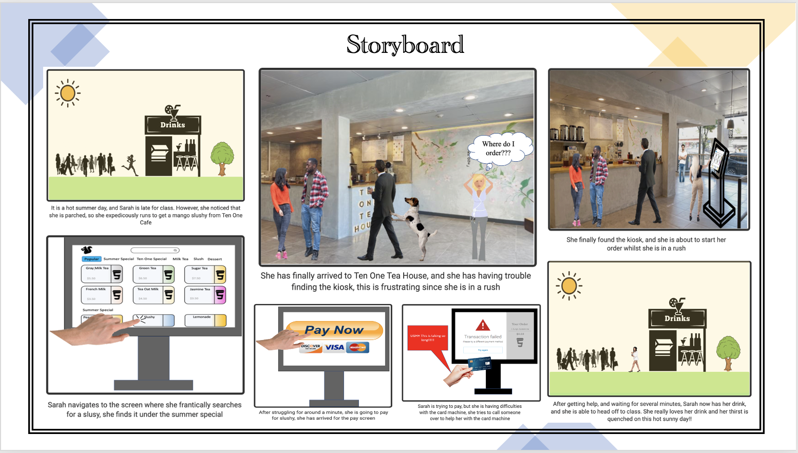

Personas & Storyboarding
Part 1: Preperation
Interview Questions:
-
How easy was it for you to locate the kiosk?
-
How did you feel while you were navigating the options that were available to you
-
How content are you with the payment interface, and do you think there can be improvements?
-
How content are you with your overall experience with ordering your drink?

Part 2: Recording Observations
Key Observations
-
On average, it took the average consumer around 2 to 3 minutes to order the drink that they wanted to
order, which shows that ordering time was relatively quick. It is important to note that some of the time spent
was due to hesistation about what the consumer wanted to order.
-
Most of the people that I observed had some trouble paying with their credit card and their phone (apple/google pay).
For the people who tried to pay with their card, they had issues with putting it in correctly, and for the people who were
paying with their phone, they had issues placing the phone in the right area for the card macihine to read it.
-
People had to ask for whether or not they were able to pay in cash since the kiosk did not have any instructions for those who
wanted to pay in cash. It only provided instructions for those who wanted to use a card.
-
The general process for users in terms of ordering a drink was mostly the same. Users tapped the welcome screen. Afterward, they were
navigated to a screen with the drinks where they could select and add certain drinks to their cart. After they finished selecting the drinks
that they wanted, they tapped the area which stated that they were done with their order, and they attempted to pay.
Interview Questions and Responses
-
How easy was it for you to locate the kiosk?
-
Most people said that when they first walked into the store, that they
had a little bit of trouble locating the kiosk. More specifically, someone
said that it does not make sense for the place where you pay to be in the back of
the store.
-
A lot of the people that I interviewed said that they had to ask an employee where
to order and pay for a drink since they did not even know that a kiosk was available.
-
Most people said that they would have liked for the kiosk to have been somewhere in the
middle (a lot of people said that it should have been like a McDonalds store).
-
People also noted that they wish for the kiosk to have been larger in size since it would
make it more noticeable, convenient, and easier to utilize
-
How did you feel about navigating and looking through the options that were available?
-
Most people were content with the interface as they said that it was easy to navigate, and it was
intuitive enough for them. One thing that someone noted is that they should try to place the items
that are sold out at the bottom so that it makes it easier to see what is available to buy.
-
A lot of people said that the interface was aesthetically pleasing as well. Some people were confused
about some of the logos that were on the screen , as someone questioned what one of the logos were for.
-
Other people wished for nutritional details for some of the drinks, as one of them was lactose intolerant, and
was concerned about whether the mango slushy he was ordering had dairy in it. He assumed that it did not have dairy, and
by the time that he got his order, he asked the employee whether or not it had dairy in it, and the employee said yes, and
then proceeded to offer him an option with lactaid free milk. He said that it would have been nice to know whether or not
the drink was made with dairy. He also said that it would have been nice to have the lactaid free option whilst he was ordering
his drink.
-
How content were you with the payment interface, and do you think that there can be improvements?
-
A lot of people struggled with the payment interface,and paying with the kiosk.
-
One of the people I observed was trying to pay with their card, but had a lot of trouble aligning their card into the card reading
machine. They noted that it would have been nice for there to have been clear instructions on which direction they are supposed to
swipe their card as she spent nearly a minute trying to figure it out. This person had to call someone over to help them pay since
they struggled so much
-
Another person was trying to use Apple Pay as a means for paying for their drink, and they had some trouble paying for their drink
as well. Like the person who was trying to pay with their card, they said that it would have been nice for there to have been clear
instructions about where and how they were supposed to utilize their phone to pay for their drink.
-
How content were you with your overall experience for ordering your drink?
-
In spite of the minor qualms and difficulties, most people seemed to have been content with their service. Once they were done paying,
they had to wait around 5 minutes for their drink.
-
One person noted that they would have liked for there to have been more clarity about whether or not cash was accepted at the kiosk or
not, as they had to ask one of the workers where they could pay with cash.
Part 3: Personas


Part 4: Storyboards
